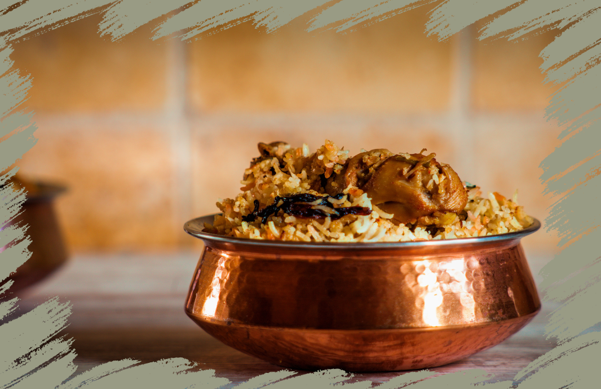

Simply Delicious:
Your Ultimate Guide to Mouthwatering Recipes
Welcome to Zarin's Wok: A Culinary Journey of Trial and Error (and Deliciousness). Every recipe has a story and every dish is made with love. Join me on a culinary adventure and let's explore the delicious world of home cooking together!
